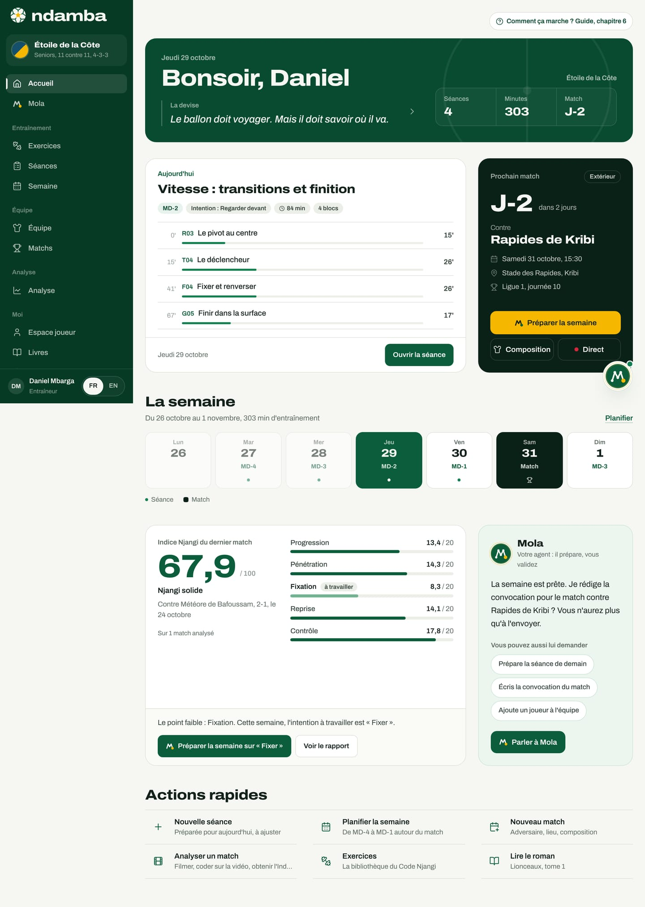

L’accueil, la navigation et les réglages
L’écran d’accueil d’un entraîneur bloc par bloc, le bouton Mola et sa bulle de nouvelles, l’équipe active et le changement d’équipe, chaque panneau des Réglages (profil, équipes, formule, sauvegardes, effacement) et la page Premium avec son activation de démonstration.
12 min de lecture
Un entraîneur n’a pas le temps de chercher. Quand il ouvre Ndamba, le matin ou une heure avant la séance, il doit voir tout de suite ce qu’on fait aujourd’hui, quand se joue le prochain match, à quoi ressemble la semaine et ce que le dernier match a appris. L’écran d’accueil est construit pour cela, comme la porte du vestiaire où l’on affiche le programme. Ce chapitre le décrit bloc par bloc, puis présente le bouton Mola, le changement d’équipe, les Réglages et la page Premium.
L’accueil d’un entraîneur, bloc par bloc
L’accueil est la première page de l’application (/app). Les captures montrent la démo club pro : Daniel Mbarga, entraîneur de l’Étoile de la Côte, deux jours avant un déplacement à Kribi.

Le bandeau
Le bandeau vert affiche la date et vous salue par votre prénom (« Bonsoir » à partir de 18 heures). Dessous, une phrase tourne entre La devise, la Leçon du Ballon du jour (un lien vers la leçon) et Notre mantra ; la petite flèche passe à la suivante. À droite, trois chiffres : Séances et Minutes de la semaine, et Match, le compte à rebours (« J-2 », « Jour J », ou « Aucun »).
Aujourd’hui
La grande carte blanche dit ce qui se passe aujourd’hui. Elle a trois visages :
- Une séance est prévue. Son titre, ses étiquettes (le jour de la semaine comme MD-2, l’intention, la durée, le nombre de blocs, et « Préparée par Mola » si c’est lui qui l’a construite), puis le déroulé minute par minute : chaque exercice avec son code, son nom et sa durée. Touchez un exercice pour ouvrir sa fiche, ou Ouvrir la séance pour la modifier.
- Rien n’est prévu. « Pas encore de séance », suivi d’une proposition expliquée : le jour MD de la semaine du match, une séance « Jeunes » jusqu’aux U13, ou une séance MD-3 quand aucun match n’approche. Préparer la séance MD-3 (ou le jour proposé) crée la séance et l’ouvre ; Choisir des exercices ouvre la bibliothèque.
- C’est jour de match. « Jour de match », avec un rappel (faire filmer le match pour le coder ensuite sur sa vidéo), En direct, sans vidéo pour coder depuis la touche si personne ne filme (chapitre 12) et Composition pour vérifier l’équipe.
Prochain match
La carte sombre annonce le prochain match : Domicile ou Extérieur, le compte à rebours (« J-2 », puis « Demain », puis les heures et minutes le jour même), l’adversaire, la date, le lieu et la compétition. Trois boutons :
- Préparer la semaine, en or : Ndamba crée les séances qui manquent, de MD-4 à MD-1, autour du match, pour les seuls jours encore à venir. Il laisse libres le jour d’un autre match et son lendemain, réservé à la récupération. Un message confirme, par exemple « 3 séances préparées pour la semaine du match. », avec le lien Voir la semaine. S’il n’y a rien à créer, le message le dit : « Rien à ajouter avant le match : les jours restants ont déjà leur séance, ou sont pris par un autre match et sa récupération. » C’est le cas dans la démo, dont la semaine est déjà prête. Le bouton est grisé le jour du match.
- Composition ouvre la feuille de match (chapitre 11).
- Direct ouvre l’analyse en direct (chapitre 12).
Le direct reste le chemin le plus court le jour du match, mais ce n’est plus le chemin conseillé : si le match est filmé, ajoutez sa vidéo après le coup de sifflet et codez-la dans Analyse, où chaque action peut être revue et corrigée (chapitre 12).
Sans match prévu, la carte dit « Aucun match prévu » et propose Nouveau match.
La semaine
Une frise montre la semaine du lundi au dimanche et son total de minutes : aujourd’hui en vert, le jour du match en noir, les jours passés estompés. Chaque jour porte son nom par rapport au match (MD-4, MD-3…) et un point par séance. Touchez un jour pour ouvrir son match ou sa séance ; Planifier ouvre la page Semaine (chapitre 9).


Indice Njangi du dernier match
Cette carte résume le dernier match codé. À gauche, l’Indice sur 100 (67,9 dans la démo), son niveau en mots (« Njangi solide »), l’adversaire, le score et la date, puis une petite courbe de tendance quand plusieurs matchs sont analysés. À droite, les cinq sous-indices sur 20 : Progression, Pénétration, Fixation, Reprise et Contrôle. Le plus faible porte l’étiquette « à travailler ».
Dessous, une phrase en tire la leçon (« Le point faible : Fixation. Cette semaine, l’intention à travailler est « Fixer ». ») et deux boutons : Préparer la semaine sur « Fixer », qui construit la semaine autour de cette intention, et Voir le rapport (chapitre 13). Le chapitre 2 explique ce que mesurent l’Indice et ses sous-indices.
Avant tout match codé, la carte invite à le faire : Analyser le match contre… si un match approche, sinon Ouvrir l’analyse.
Mola
La carte verte de Mola (« Votre agent : il prépare, vous validez ») propose une seule chose selon votre situation : créer votre équipe, préparer les séances qui manquent avant le match, rédiger la convocation quand la semaine est prête (c’est ce qu’elle propose dans la démo), ou montrer les exercices de votre point faible. Les trois exemples sous « Vous pouvez aussi lui demander », comme Prépare la séance de demain, ouvrent Mola avec la demande déjà écrite. Parler à Mola ouvre sa page complète.
Actions rapides
En bas, six raccourcis : Nouvelle séance (préparée pour aujourd’hui, à ajuster), Planifier la semaine, Nouveau match, Analyser un match (qui ouvre la page Analyse), Exercices et Lire le roman.
Les autres rôles et l’accueil sans équipe
L’analyste, le directeur technique et la fédération voient le même accueil ; le joueur et le parent ont le leur (chapitres 3, 15 et 17). Sans équipe, un petit formulaire « Crée ton équipe » s’affiche en haut : un nom, une catégorie, un format, puis Créer l’équipe. En formule Gratuit comme en Joueur Premium, l’application compte cinq séances en tout. Préparer la semaine ne crée des séances que jusqu’à ce total ; une fois les cinq séances enregistrées, Nouvelle séance, Préparer la séance et Préparer la semaine mènent à la page Premium.
Le bouton Mola et sa bulle de nouvelles
Le bouton rond au visage de Mola reste en bas à droite de chaque page (au-dessus de la barre d’onglets sur téléphone). Sa pastille se lit d’un coup d’œil :
- un point vert : Mola a écrit un message que vous n’avez pas encore lu ;
- un chiffre sur fond or : le nombre d’actions qui attendent votre accord, comme une convocation prête à partir.
Touchez le bouton : un panneau de conversation s’ouvre sans quitter la page. En tête, Mola et la mention « L’agent de Ndamba » (« Mola travaille… » pendant qu’il agit), le bouton Tout Mola pour ouvrir la page complète, et une croix pour fermer. Dessous, les derniers messages, puis l’encadré Mola a remarqué : une ou deux propositions tirées de vos données (« Le match contre Rapides de Kribi approche (samedi). Je rédige la convocation ? »), chacune avec un bouton de réponse en un geste comme Oui, rédige-la. La croix d’une proposition la masque pour la journée. Enfin, des suggestions de demandes et la zone « Demandez à Mola… ».

Le panneau se ferme avec la croix, la touche Échap ou en changeant de page.
La bulle de nouvelles. Quand Mola a du nouveau (une tâche terminée, un résultat prêt) et que le panneau est fermé, une bulle apparaît au-dessus du bouton avec le début de son message. Touchez-la pour ouvrir la conversation, ou touchez sa croix (Masquer). Elle s’efface seule après quelques secondes. Le tout premier bonjour de Mola ne s’annonce jamais par une bulle : vous le lisez en ouvrant le panneau.
Le lien vers le guide, sur chaque page
En haut à droite de chaque page de l’application, un petit lien précédé d’un point d’interrogation indique : Comment ça marche ? Guide, chapitre N. Il ouvre dans un nouvel onglet le chapitre de ce guide qui explique la page où vous êtes ; votre travail reste ouvert dans l’onglet de l’application. Le guide s’ouvre dans la langue de l’application.
| Page | Chapitre ouvert |
|---|---|
| Accueil | 6 pour un entraîneur, 15 pour un joueur, 17 pour un parent, 12 pour un analyste |
| Mola | 18 |
| Exercices | 7 |
| Séances | 8 |
| Semaine | 9 |
| Équipe et Observer | 10 |
| Matchs | 11 |
| Analyse et le direct | 12 |
| Le rapport d’un match | 13 |
| Les vidéos des matchs et le studio vidéo | 14 |
| Espace joueur | 15 (16 pour les leçons, le carnet et le parcours) |
| Livres | 19 |
| Premium | 24 |
| Réglages | 6 |
L’équipe active et le changement d’équipe
Ndamba travaille toujours sur une équipe active : c’est elle que montrent l’accueil, les séances, les matchs et l’analyse. Sur ordinateur, sa plaque est en haut de la colonne de gauche (ses couleurs, son nom, sa catégorie, son format et son système). Sur téléphone, son nom est rappelé en haut du panneau Plus.
Pour changer d’équipe :
- Touchez la plaque de l’équipe en haut de la colonne (son info-bulle dit Changer d’équipe), ou ouvrez Réglages.
- Dans le panneau Équipes, repérez l’équipe voulue.
- Touchez Rendre active. Le message « … est maintenant l’équipe active. » confirme, et toute l’application bascule sur elle.
Les Réglages en détail
Les Réglages (/app/reglages) rassemblent « Votre profil, vos équipes et vos données ». Ils s’ouvrent depuis le menu, le bloc avec votre nom en bas de la colonne ou le panneau Plus sur téléphone.

Profil
Six champs : Nom, Rôle (les six rôles), Langue, Pays, Ville et Club ou académie. Touchez Enregistrer le profil ; « Profil enregistré. » confirme. Le nom est obligatoire. Changer de rôle change votre accueil : un joueur ou un parent retrouve l’accueil qui lui est destiné. Changer de langue bascule l’application dès l’enregistrement.
Équipes
La liste de vos équipes, chacune avec ses couleurs, son nom, sa catégorie, son format, son système et son nombre de joueurs. L’équipe active porte l’étiquette Active. Les autres ont un bouton Rendre active ; toutes ont Modifier.
Pour créer une équipe, touchez Nouvelle équipe. Une fenêtre demande le Nom de l’équipe, la Catégorie (des U6 aux seniors professionnels), le Format (de 5 contre 5 à 11 contre 11) et le Système de départ, proposé selon le format. Touchez Créer. Modifier ouvre la même fenêtre pour une équipe existante, avec Enregistrer. Il n’existe pas aujourd’hui de bouton pour supprimer une équipe.
Formule
Votre formule actuelle (par exemple Coach Pro) et le bouton Voir les formules, qui ouvre la page Premium.
Vos données
« Tout est enregistré dans ce navigateur. » Ce panneau est votre filet de sécurité.
- Exporter une sauvegarde : le bouton Exporter télécharge un fichier au nom de la date, comme ndamba-2026‑10‑29.json, avec votre profil, vos équipes, séances, matchs, analyses et notes, ainsi que les leçons marquées « J’ai compris » et « Mon regard » de l’espace joueur.
- Restaurer une sauvegarde : le bouton Restaurer vous fait choisir un fichier. Ndamba affiche « Restaurer cette sauvegarde ? », la date de la sauvegarde et son nombre d’éléments, et prévient que toutes les données actuelles de ce navigateur seront remplacées. Confirmez avec Restaurer. Un fichier qui ne vient pas de ces réglages est refusé, avec un message clair.
- Tout effacer : supprime le profil, les équipes et tout le reste de ce navigateur, y compris les leçons marquées « J’ai compris » et « Mon regard » ; le choix de la langue, lui, est gardé. Une fenêtre demande confirmation (« Cette action est définitive. ») ; après Tout effacer, vous revenez à l’accueil du site.
Pour passer votre travail sur un autre appareil :
- Sur l’ancien appareil, ouvrez Réglages et touchez Exporter.
- Envoyez-vous le fichier (par e-mail, câble ou clé USB).
- Sur le nouvel appareil, créez un espace (ou lancez une démo), puis ouvrez Réglages.
- Touchez Restaurer, choisissez le fichier et confirmez.
À propos
La version (Ndamba 1.0.0), l’auteur (William Foteping), l’éditeur (Lemon Network Solutions), le stockage (« Sur cet appareil ») et le lien Lire les livres.
La page Premium et l’activation de démonstration
La page Premium s’ouvre depuis le menu Moi, depuis Voir les formules ou sur le site (/premium). Son titre : « Une formule pour chaque rôle ». Les livres et les exercices de la méthode restent gratuits pour tous.

Juste sous le titre, un encadré annonce : « Les paiements ne sont pas encore branchés. Mobile Money et cartes bancaires arrivent bientôt. En attendant, vous pouvez activer n’importe quelle formule en mode démo pour tout essayer, sans payer. »
Le sélecteur Mensuel ou Annuel change l’affichage des prix ; l’annuel compte dix mois (« 2 mois offerts »). Les cinq formules sont Gratuit (0 $US), Joueur Premium (4,99 $US par mois), Coach Pro (12,99 $US par mois, « Conseillé aux entraîneurs »), Club et académie (49 $US par mois) et Fédération (« Sur devis »). Chaque prix payant est suivi de son équivalent approximatif en francs CFA, sur la base d’environ 600 FCFA pour un dollar. Une carte à part présente l’Analyse IA d’un match, proposée à 2,99 $US par match en plus de n’importe quelle formule (chapitres 14 et 24). Des questions fréquentes ferment la page, dont « Faut-il tout saisir à la main ? ».
Pour activer une formule en démo :
- Ouvrez Premium.
- Sur la carte voulue, touchez Activer (démo).
- Un message confirme, par exemple « Formule Coach Pro activée en mode démo. Aucun paiement n’a été effectué. ».
- La carte affiche désormais Votre formule, et le panneau Formule des Réglages donne le nouveau nom. Sous votre nom, en bas de la colonne, c’est votre rôle qui reste affiché.
Ce que l’activation change, aujourd’hui : les formules Gratuit et Joueur Premium, qui ne contiennent pas les outils de l’entraîneur, limitent l’application à cinq séances et à un match analysé (sur vidéo ou en direct). Une fois la limite atteinte, les boutons qui créent des séances mènent à Premium, et sur la feuille d’un nouveau match, Ajouter la vidéo du match porte un cadenas et mène aussi à Premium, sous un encadré « L’analyse illimitée est dans Coach Pro » avec Voir les offres. Dans Analyse, ces matchs proposent Voir les offres au lieu d’Ajouter la vidéo. Avec Coach Pro, Club et académie ou Fédération, ces deux limites disparaissent. Pour revenir en arrière, activez Gratuit. Certaines lignes des cartes décrivent l’offre prévue plutôt qu’un écran existant : « Comptes du staff (bientôt) » et « Le modèle de jeu du club (bientôt) » le disent elles-mêmes, car les comptes utilisateurs ne sont pas encore construits. Le chapitre 24 détaille le modèle économique.